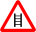

Карта препятствий для велосипедистов. Если вы знаете, что в каком-то месте точно есть бордюр, лестница, припаркованные на тротуаре автомобили, пешеходы и т.д., которые мешают велосипедистам, просто приблизьте карту до 17-18 уровня и отметьте проблему, кликнув мышкой.
Отмечайте все бордюры, не соответствующие строительным нормам. Вкратце: если бордюр выше 5 см — однозначно не соответствует. Если ниже, но на пересечении с проездом во двор — тоже, его там не должно быть вообще. Пандусы — тоже нарушение.
«5.4.8 В местах пересечения пешеходных путей с проезжей частью улиц высота бортовых камней проезжей части должна быть не более 0,025–0,040 м, при этом сужение ширины проезжей части не допускается. Уклон тротуара при спуске к проезжей части должен быть не более 100‰. Пересечения пешеходных путей с проездами к домам следует выполнять в одном уровне. Пересечения пешеходных путей с проездами и спуски тротуаров к проезжей части следует выделять за счет применения покрытий тротуаров и пешеходных дорожек, по материалу, фактуре поверхности и цвету контрастирующих с проезжей частью. Бортовые ограждения (бортовые камни, поребрики) не должны иметь скошенную верхнюю грань.» (ТКП 45-3.03-227-2010 «Улицы населённых пунктов. Строительные нормы проектирования»)
08.09.2011: Новая версия карты. Пожалуйста, шлите замечания на webmaster@bike.org.by
| Легенда: | |
|---|---|
| Бордюр, бордюры | |
 | Припаркованные автомобили |
 | Пешеходы |
 | Собаки |
|  | Ступеньки |
 | Дефекты покрытия |
 | Иная проблема |
 | Исправленная проблема |